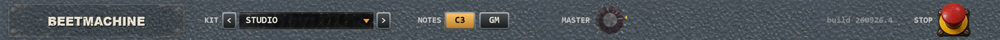

Brokild · Windows VST3 · Drum kit instrument
BEETMACHINE
Eight slots, three drum synthesisers, one kit. No samples.
MANUAL · BUILD 260926.4

Brokild · Windows VST3 · Drum kit instrument
Eight slots, three drum synthesisers, one kit. No samples.
MANUAL · BUILD 260926.4
Contents
Beetmachine is a drum kit. It has eight slots, and each one holds a real copy of one of three Brokild drum synthesisers — Kickstart, Snare Tactics or Hats Off — or nothing at all.
Click a slot and that drum’s own full panel opens underneath. Nothing is sampled: every hit is synthesised as you play it.
Open it and play C3 to G3 on a keyboard: that is the whole STUDIO kit. Then press > beside KIT and play them again.
What it is

An occupied slot runs a real copy of that drum, built from the drum’s own source — not a cut-down version of it. Whatever the drum can do on its own, it can do here.
An empty slot costs nothing: there is no drum in it to run. Eight empty slots measure 0.011 % of one core.
There is a convention, and it is not enforced: kicks in slots 1–2, snares in 3–4, hi-hats, ride, crash and splash in 5–8. Any slot can hold any drum.
Copy Beetmachine.vst3 into C:\Program Files\Common Files\VST3\ and rescan. The standalone needs no installing.
Slot 1 is on C3, slot 8 on G3. Or click the black HIT button on any card.
Click a card. That drum’s own panel opens below the strip, with every control it has.
Anatomy

The slot’s number, and what it holds: EMPTY, KICKSTART, SNARE TACTICS or HATS OFF.
The drum’s own factory presets. The arrows step through them; the name opens the list.
The black palm button plays the slot. The amber jewel lamp beside it lights on every hit, from MIDI too. Then the slot’s note.
Note down or up a semitone. LEARN: press it, then play a key — that key now triggers this slot.
The amber mark on each knob’s scale shows its setting. Double-click: 0 dB, and centre.
Mute and solo. While any slot is soloed, only soloed slots sound.
Light another slot’s number and a hit there silences this one. The card’s own number is dimmed: a slot cannot choke itself. See page 6.
MIX, OWN or BOTH: where the slot’s sound goes. See page 7.
MIDI
One note per slot. Two rows are built in; any slot can be moved.
| Slot | Convention | C3 row | GM row |
|---|---|---|---|
| 1 | kick | C3 · 60 | C1 · 36 |
| 2 | kick | C#3 · 61 | B0 · 35 |
| 3 | snare | D3 · 62 | D1 · 38 |
| 4 | snare | D#3 · 63 | E1 · 40 |
| 5 | closed hat | E3 · 64 | F#1 · 42 |
| 6 | open hat | F3 · 65 | A#1 · 46 |
| 7 | ride | F#3 · 66 | D#2 · 51 |
| 8 | crash | G3 · 67 | C#2 · 49 |
Note names follow Ableton Live, where C3 is MIDI note 60.
C3 puts the kit on eight neighbouring keys from C3 up. GM sets the General MIDI drum notes, so a MIDI file or groove written for GM plays the right drums. Once any note has been moved, the header reads CUSTOM.
Nudge a slot a semitone at a time, or press LEARN and play the key you want.
Two slots on the same note both play. Put a Kickstart and a Snare Tactics on one key and it is one hit.
Each drum’s own KEYS switch still works in its panel. Whatever it is set to, Beetmachine plays the sound dialled on that drum.
One hit silencing another

A real open hi-hat stops ringing the moment the pedal closes it. A kit without that sounds wrong straight away, and this is how Beetmachine does it.
On each card, light any other slot’s number. A hit on that slot now silences this one, with a 3 ms fade so it does not click. Light several numbers and any of them will do it.
A choked slot is not switched off. It plays normally on its next hit.
In every kit the open hat in slot 6 is choked by the closed hat in slot 5. LO-FI also chokes its splash, slot 8, from the ride in slot 7.
Light 2 on the crash in slot 8. Now a hit on the second kick grabs the crash — a stop hit, the way a drummer would catch the cymbal.
Routing
Stereo is the default. Eight more stereo outputs, one per slot, are there when you want them.
| OUT | Where the slot goes |
|---|---|
| MIX | The main stereo mix. Every slot starts here. |
| OWN | Only the slot’s own stereo output pair. It is taken out of the mix, so it is not heard twice. |
| BOTH | The main mix and its own pair. |
The eight extra pairs are switched off until the host enables one. Hosts list them as Mix and Slot 1 to Slot 8; route one to a track in your DAW and it comes up.
A slot set to OWN whose pair is off in the host stays in the mix rather than going silent, and its card says OFF IN HOST.
The three drums have different built-in latencies: at 48 kHz, Kickstart 95 samples, Snare Tactics 95, Hats Off 103.
Beetmachine delays the quicker ones to match, so drums played together land on the same sample, and it tells the host its latency so the host can compensate.
Loading a kit changes the sounds, levels, pans and chokes. It never changes your notes or your output routing.
Full editing

That drum’s own panel opens below, unchanged: every control, its preset browser, its SAVE and LOAD.
Everything set in a drum’s panel is kept with the project. It is not automated control by control.
KICKSTART a red-lead steam pile-driver, SNARE TACTICS olive-drab field gear, HATS OFF a lathe in a cymbal foundry.
Across the top

Ten themed kits. The arrows step through them; the name opens the list. The kits are on page 10.
C3 or GM, and CUSTOM once a note has been moved. See page 5.
The red knob: the level of the whole kit.
The red emergency stop. Every slot fades out at once.
The host sees each slot’s level, pan and mute, and Master. The drums’ own controls are saved with the project but not automated one by one.
Ten themed kits
| Kit | 1 kick | 2 kick | 3 snare | 4 snare | 5 hat | 6 open hat | 7 | 8 |
|---|---|---|---|---|---|---|---|---|
| STUDIO | Studio Kick | Rock Kick | Studio Snare | Rock Rim Shot | Studio Hi-Hat 14 | Loose Hat | Jazz Ride 20 | Crash 16 |
| 808 | 808 Boom | 808 Short | 808 Snare | 808 Clap | 808 Closed Hat | 808 Open Hat | 808 Cymbal | 606 Hats |
| 909 | 909 Classic | 909 Hard | 909 Snare | 909 Tight | 909 Closed Hat | 909 Open Hat | 909 Ride | 909 Crash |
| EIGHTIES | LinnDrum | DMX | Big Eighties | Simmons SDS-V | LinnDrum Hat | 707 / 727 Hat | Ride Bell | Crash 18 |
| BOOM BAP | SP-12 Boom Bap | MPC60 Thump | SP-1200 Crack | MPC60 Break | SP-1200 Hat | Loose Hat | Sizzle Ride | Crash 18 |
| TECHNO | Techno Rumble | Hard Techno | Techno Crush | Warehouse Clap | Techno Closed | Rolling Open Hat | Detroit Ride | Minimal Tick |
| DUB | Clean Sub | Felt Beater | Steppers | Tubby Throw | Roots Hi-Hat | Dub Hat Echo | Skank Hat | Space Cymbal |
| INDUSTRIAL | Industrial Crush | Gabber | Metal Shop | EBM Snap | Hard Techno Hat | Kraftwerk Metal | Metal Plate | China 18 |
| TRAP | Trap 808 | Dubstep Punch | Trap Snare Clap | DnB Snare | Trap Hat | UKG Shuffle Hat | Grime Hat | Halftime Crash |
| LO-FI | Lo-Fi Dust | Towel In The Drum | Lo-Fi Ghost | Seventies Dead | Lo-Fi Hat | Hats In A Room | Dark Ride 22 | Splash 10 |
Slots 1–2 are Kickstart, 3–4 Snare Tactics and 5–8 Hats Off in every kit, and every name is one of that drum’s own presets. The open hat in slot 6 is choked by the closed hat in slot 5; in LO-FI the splash is also choked by the ride. A kit sets sounds, levels, pans and chokes — never notes or routing.
The numbers
| Format | Windows VST3, 64-bit, and a standalone application |
| Type | Instrument / Drum. MIDI in; a stereo mix plus eight stereo slot outputs |
| Sound | Fully synthesised. No samples |
| Slots | Eight. Each empty, Kickstart, Snare Tactics or Hats Off |
| Kits | Ten themed kits |
| Notes | C3 row, General MIDI row, or any note per slot |
| Host parameters | Level, pan and mute per slot, and Master |
| Licence | AGPLv3. Source at github.com/peterboggild/BrokildApps |
| Price | Free |
| Build | 260926.4 |
| Eight empty slots | 0.011 % of one core |
| Full kit, all eight hit on every 16th | 40–46 % of one core |
| Choke fade | 3 ms |
| Latency at 48 kHz | 103 samples |
| Kickstart · Snare Tactics · Hats Off | 95 · 95 · 103 |
The CPU of a full kit is the three drums’ own cost, not Beetmachine’s. Every slot is aligned to the slowest drum, and the latency is reported to the host.
Credits
This VST comes from the curved mind of Professor Brokild, and was programmed with VScode, ChatGPT and Claude. Use of this is on your own peril. It may generate unique, beautiful, scary or useless sounds for you, and it may crash your DAW project. Have fun, play unsafely, unwisely, and unboringly.
Cheers, Peter Bøggild, September 2026.
Drum machine names are trademarks of their owners, used only to describe the sound a preset is in the spirit of. Beetmachine contains no samples of them.
BROKILD
Free, and free to pass on.
peterboggild.github.io/BrokildApps
BUILD 260926.4 · WINDOWS VST3